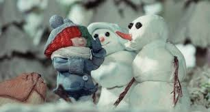
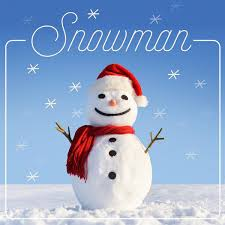
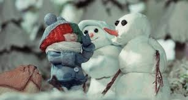
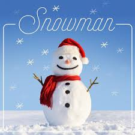

Snowman Rock Alternativo

cantora, compositora, produtora, diretora, roteirista e dubladora australiana. Ela começou sua carreira como cantora na banda de acid jazz Crisp, em meados da década de 1990.
Letra
Don't cry, snowman, not in front of me Who'll catch your tears if you can't catch me, darling? If you can't catch me, darling Don't cry, snowman, don't leave me this way A puddle of water can't hold me close, baby Can't hold me close, baby I want you to know that I'm never leaving 'Cause I'm Mrs. Snow, 'til death we'll be freezing, yeah You are my home, my home for all seasons So come on, let's go Let's go below zero, and hide from the sun I'll love you forever, where we'll have some fun Yes, let's hit the North Pole and live happily Please, don't cry no tears now, it's Christmas, baby My snowman and me, eh My snowman and me Baby Don't cry, snowman, don't you fear the sun Who'll carry me without legs to run, honey? Without legs to run, honey Don't cry, snowman, don't you shed a tear Who'll hear my secrets if you don't have ears, baby? If you don't have ears, baby I want you to know that I'm never leaving 'Cause I'm Mrs. Snow, 'til death we'll be freezing, yeah You are my home, my home for all seasons So come on, let's go Let's go below zero, and hide from the sun I'll love you forever, where we'll have some fun Yes, let's hit the North Pole and live happily Please, don't cry no tears now, it's Christmas, baby My snowman and me, eh My snowman and me Baby
Video
Galeria
 


